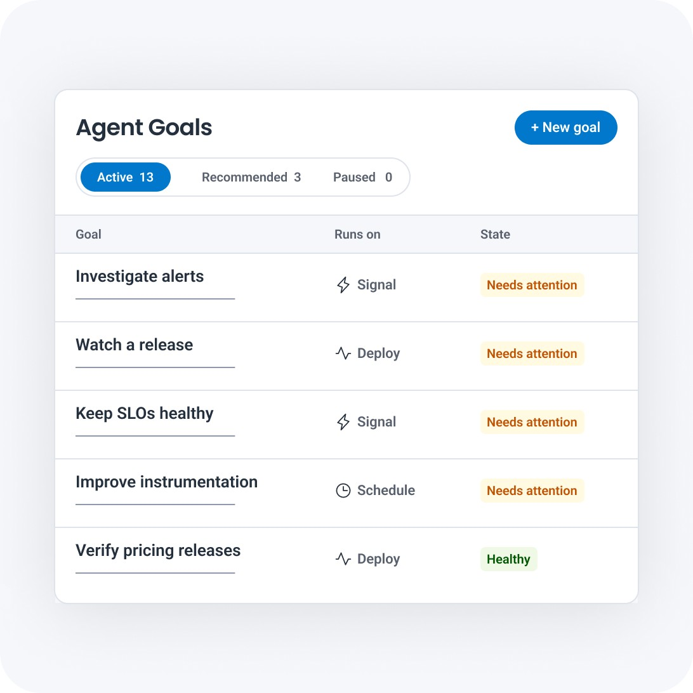

从上线动作开始检查
工程团队可以把一次上线设成调查起点：选定结账服务，要求观察发布后半小时内的延迟和错误变化，再查看代理给出的证据。这个例子来自厂商产品页，并非已经验证的客户结果。产品把范围、触发时机和完成条件放到同一个目标里，也允许排除不相关对象。这能让负责人知道代理究竟在检查哪次变化；若只写“保持系统健康”，仍很难判断任务结束没有、漏掉了哪些服务，以及一次正常波动是否值得升级处理。
Honeycomb Team Agents · 产品早期访问公告

工程团队可以把一次上线设成调查起点：选定结账服务，要求观察发布后半小时内的延迟和错误变化，再查看代理给出的证据。这个例子来自厂商产品页，并非已经验证的客户结果。产品把范围、触发时机和完成条件放到同一个目标里，也允许排除不相关对象。这能让负责人知道代理究竟在检查哪次变化；若只写“保持系统健康”，仍很难判断任务结束没有、漏掉了哪些服务，以及一次正常波动是否值得升级处理。
公告强调调查以高维度追踪资料为起点，并通过连接器补入发布、文档和其他业务上下文。代理输出不是只有一句根因猜测，而要能链接回查询、追踪或发布记录。对值班人员而言，可回查的路径比摘要语气有多确定更有用：先核对时间范围和受影响请求，再决定是否联系服务负责人。这个机制仍依赖已有埋点；缺失的数据不会因为增加一个对话入口就自动成为可观察事实。本次只核实产品说明，没有验证异常检测准确率或误报成本。
团队记忆记录曾经发生什么、反复出现多少次，以及修复是否持续有效；每条记忆带出处，团队成员可以纠正。个人代理的纠正先保持私有，再建议哪些知识适合共享。这个分层适合处理个人调试笔记与团队运行手册之间的距离，但也需要明确谁负责维护过时结论。复用经验只有在故障环境仍相近时才有帮助：服务依赖、发布方式或负责人已经变化时，旧经验应成为检查线索，而不是直接执行旧修复的理由。
产品将观察、建议、人工审查后行动和限定范围内自主处理分成不同层级，目标与工具都可以限制。公告说个人与团队代理目前处于早期访问；同日产品文章把全面开放安排在十二月一日。个人代理计划包含在各套餐中，团队代理计划通过Honeycomb Intelligence进入Pro和Enterprise，按代理工作小时而非token收费，未给出本次可核实的金额。试用时应选边界明确的服务，检查输出能否对应原始证据，并确认连接器实际拥有的操作能力，再决定扩展范围。